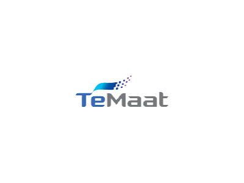

노트북과 본인 확인 자료
- 개인 노트북 및 충전기 지참
- 당일 실습이 가능하도록 노트북 사전 점검
- 신분증 또는 명함 필수 지참 — 교육 당일 본인 확인에 필요합니다.


TeMaat × Saltlux
내 업무의 반복 작업을 자동화하고,
직접 실행해 보는 2일간의 실습
01 · OVERVIEW
02 · BEFORE CLASS
원활한 실습을 위해 교육 전에 설치해 오시는 것을 권장합니다.
Claude 공식 설치 페이지 ↗양식을 내려받아 반복되거나 시간이 오래 걸리는 업무 1~3개를 작성해 주세요. 작성 내용은 교육 실습과 개인 프로젝트 주제를 준비하는 데 참고합니다.
파일명: 부서_이름_사전요청자료.docx
※ 회사에서 교육용으로 공유 가능한 자료만 제출해 주세요. 개인정보·고객정보·회사 기밀은 삭제하거나 임의 값으로 바꿔 주세요.
오프라인 교육 참석자에게 솔트룩스 교육용 계정을 제공합니다.
03 · ATTENDANCE
본 교육은 중소기업 인재키움 프리미엄 훈련 과정으로 진행됩니다.
훈련생 본인 참석 확인 및
수기 출석부 서명
환급 절차 진행을 위한
필수 수강 기준
교육 당일 본인 확인 시 제시
04 · CURRICULUM
업무 용어와 관계를 정리하고, Skills·Connectors로 반복 업무를 연결한 뒤 결과물을 검증합니다.
1일차 · 8시간
실습 환경과 준비자료 확인, 내 업무 과제 정하기
업무를 확인 가능한 단계로 나누고, 의미·예시·제외 조건을 용어사전으로 정리
사람·문서·업무·상태를 맥락 지도로 연결하고, 반복할 규칙과 자료를 Project에 정리
자주 사용하는 지시와 확인 기준을 정리하고, 재사용할 Skill 구성
남는 결과물업무 용어사전 · 맥락 지도 · Project 기본 구조
2일차 · 8시간
Skill 재실행, 실행 전 계획 확인, 사람의 승인 지점과 최소 연결 범위·예약 기준 설계
사실·결정·할 일을 구분하고, 공통 폴더를 옮기지 않은 분류표와 입력·처리·결과·승인 단계 구성
다양한 자료로 시운전하고 승인 지점에서 멈추는지 확인
사용법과 재사용 자료 묶음을 완성하고, 동료가 다시 실행할 수 있는지 확인
남는 결과물내 업무 v1 · 검증표 · 동료용 사용법과 재사용 자료
업무 흐름을 직접 실행하고, 검증표와 사용법을 함께 완성합니다.
※ 교육 내용과 세부 일정은 교육 진행 상황에 따라 달라질 수 있습니다.
TeMaat × Saltlux · 2026 교육안내